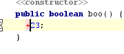

The projectional editor has its quirks. When editing an expression on its left-hand side, you are supposed to trigger left-side transformations. This typically means typing first the symbol that is supposed to be the closest one to the expression on the left and then completing with code completion.
